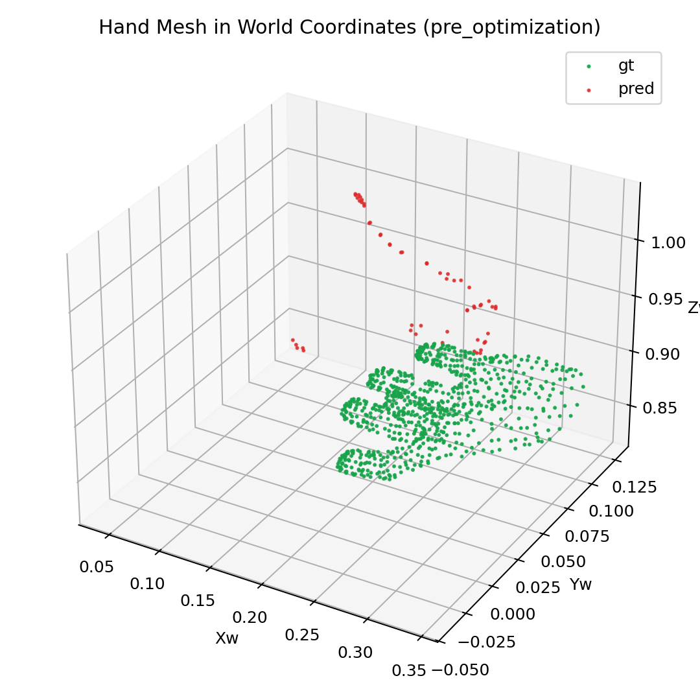
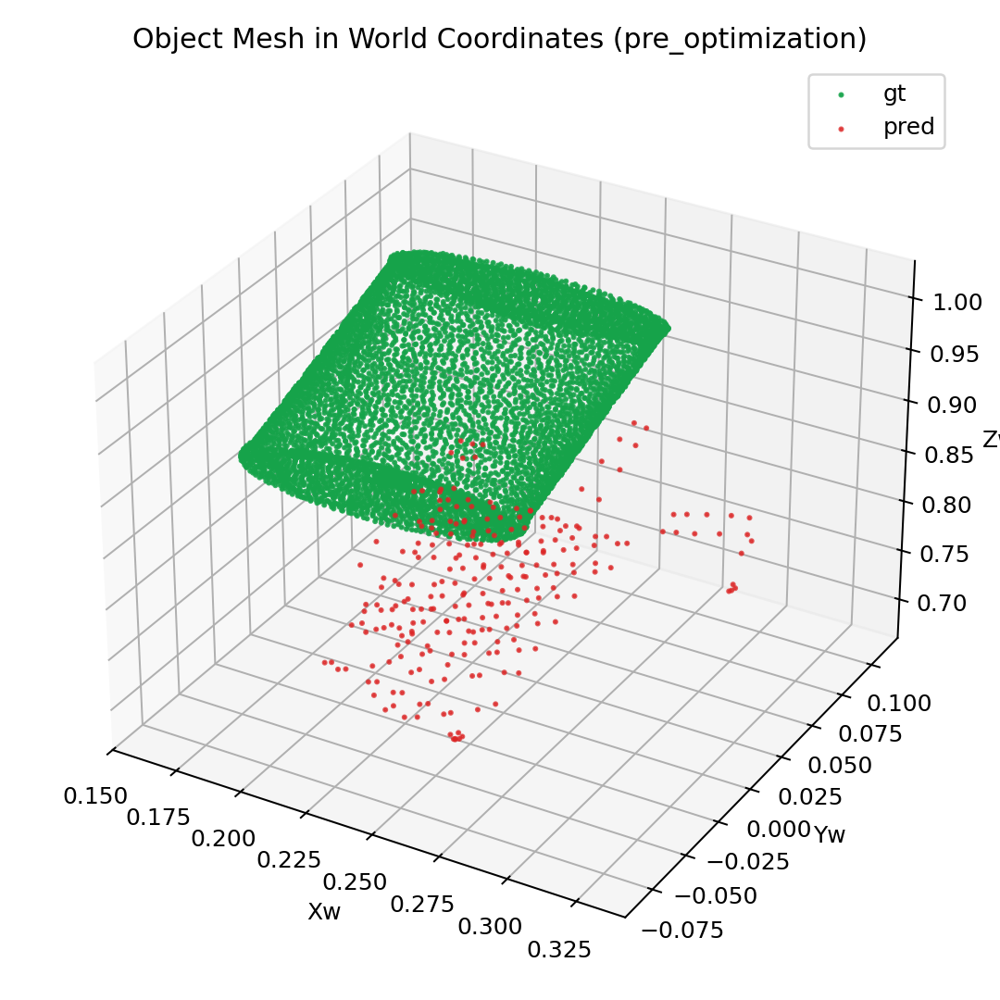
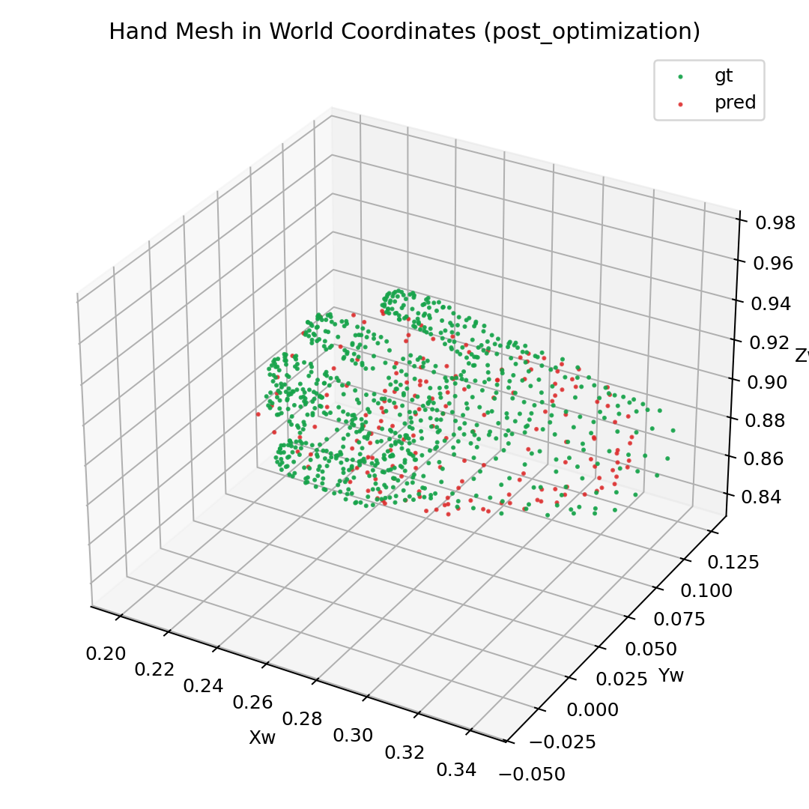
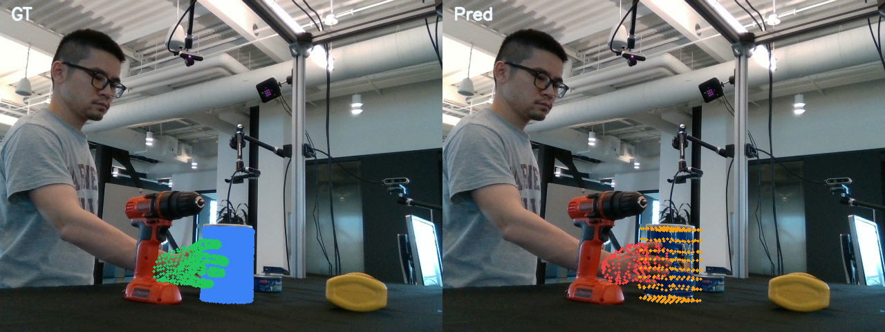
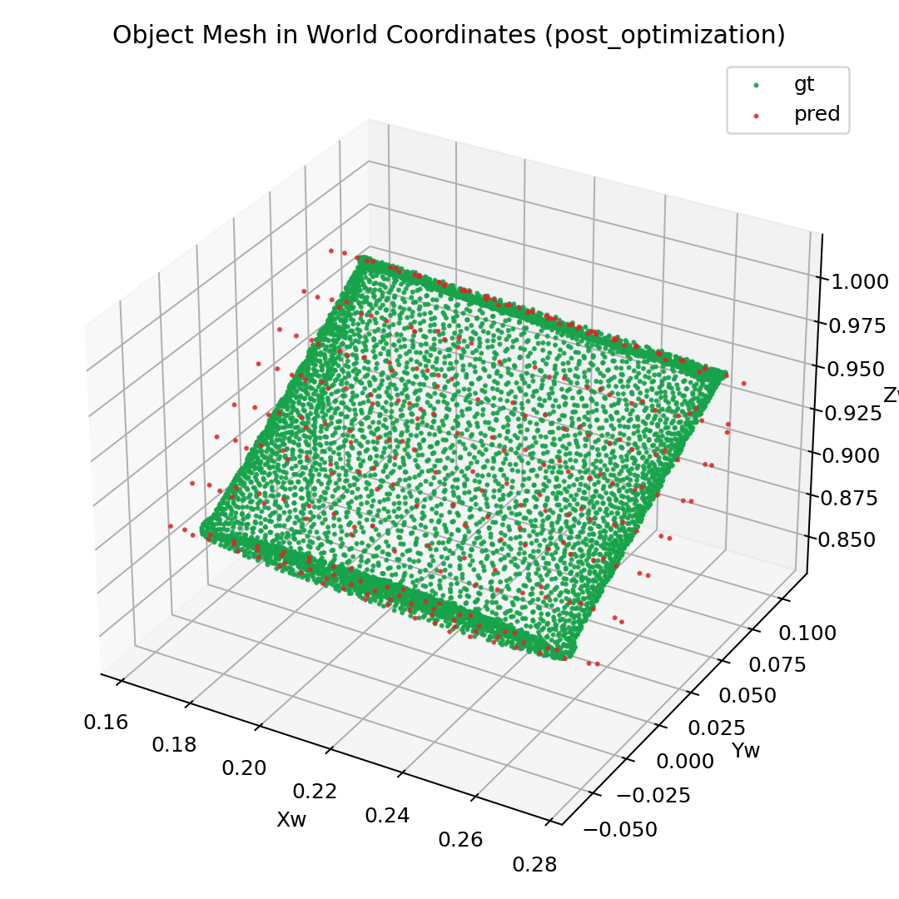
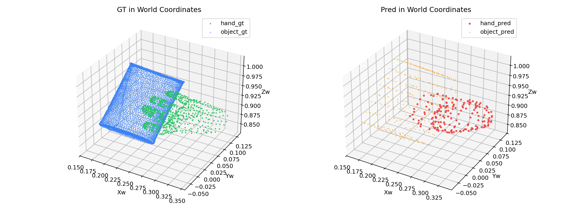

P2-LATENT-RECON-OVERFIT-001
Phase 2 Single-Sequence Overfit — Latent-Space Reconstruction Loss
Training Modules
| Module | Role | Weight Init | Weight Source |
|---|
| stream3r.encoder (patch_embed + frame_blocks) | frozen | pretrained | STream3R default |
| stream3r.decoder (global_blocks) | frozen | pretrained | STream3R default |
| trellis2.sc_encoder (FlexiDualGridVaeEncoder) | frozen | pretrained | shape_enc_next_dc_f16c32_fp16 |
| trellis2.sc_decoder (FlexiDualGridVaeDecoder) | frozen | pretrained | shape_dec_next_dc_f16c32_fp16 |
| token_bridge (input_proj + output_proj) | optimized | random_init | none |
Trainable parameters: 4 tensors (input_proj.weight [1024,32], input_proj.bias [1024], output_proj.weight [32,1024], output_proj.bias [32])
Loss: L2 between refined SLat tokens (after STream3R global attention + output_proj) and original encoder SLat tokens.
Optimizer: Adam, lr=0.001
Loss Convergence
| Step | Latent Recon Loss | Hand Loss (monitor) | Object Loss (monitor) | KL |
|---|
| 1 | 1836.53 | 1.000 | 0.055 | 47.54 |
| 20 | 3.63 | 0.013 | 0.015 | 47.54 |
| 40 | 0.45 | 0.013 | 0.016 | 47.54 |
| 60 | 0.14 | 0.013 | 0.016 | 47.54 |
| 80 | 0.089 | 0.013 | 0.016 | 47.54 |
| 100 | 0.079 | 0.014 | 0.016 | 47.54 |
| 120 | 0.080 | 0.014 | 0.016 | 47.54 |
| 140 | 0.058 (best) | 0.014 | 0.016 | 47.54 |
| 160 | 0.121 | 0.014 | 0.016 | 47.54 |
| 180 | 0.100 | 0.013 | 0.016 | 47.54 |
| 200 | 0.093 | 0.013 | 0.016 | 47.54 |
Observations
Key Findings
- Rapid convergence: Loss drops from 1836 to 3.6 in just 20 steps (99.8% reduction)
- Plateau reached: After step 60, loss oscillates in [0.05, 0.12] range
- Geometry monitoring stable: Hand loss (0.013) and object loss (0.016) from render-based TrellisGeometryLoss are constant — expected since decoder is frozen and mesh extraction is non-differentiable
- KL constant: KL=47.54 throughout (encoder frozen, no sampling)
- Architecture validated: Gradients flow through input_proj → (through STream3R attention as identity, since global_blocks are frozen) → output_proj
Limitations
- Only token bridge parameters are trainable (4 tensors, ~66K params)
- STream3R global_blocks are frozen — no cross-modal fusion learning yet
- Decoder is frozen & eval-mode — mesh quality cannot improve
- Latent recon loss does not directly optimize mesh quality; it validates the encode→project→refine→unproject round-trip
Next Steps
- Unfreeze STream3R global_blocks to enable cross-modal attention learning
- Build gt_intersected data pipeline for differentiable decoder training
- Add coordinate transform: normalized_space → world W
Pre-Optimization Visualizations
Hand Mesh (Pre-Optimization)

Hand vertices: GT vs Predicted (world space scatter)

Overlay comparison (GT vs Predicted)
Object Mesh (Pre-Optimization)

Object vertices: GT vs Predicted (world space scatter)

Full scene comparison
Post-Optimization Visualizations (Step 200)
Hand Mesh (Post-Optimization)

Hand vertices: GT vs Predicted (world space scatter)

Overlay comparison (GT vs Predicted)
Object Mesh (Post-Optimization)

Object vertices: GT vs Predicted (world space scatter)

Full scene comparison
Reproducibility